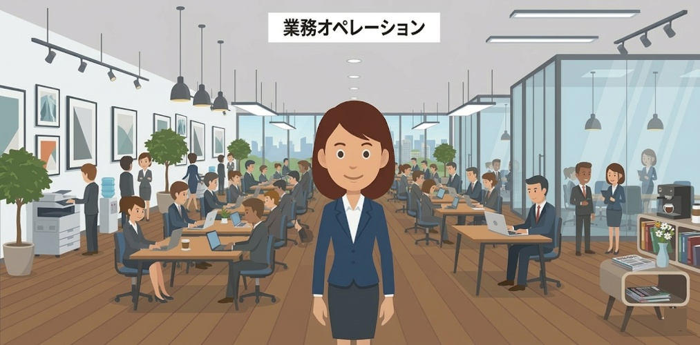
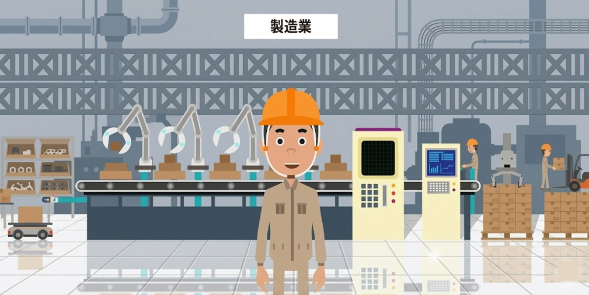
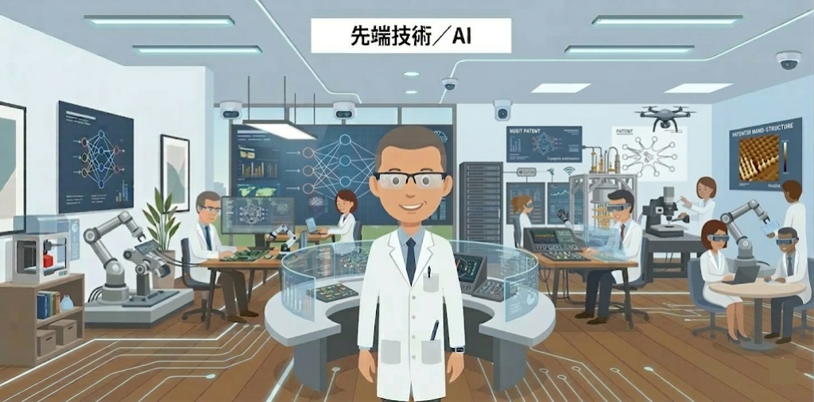
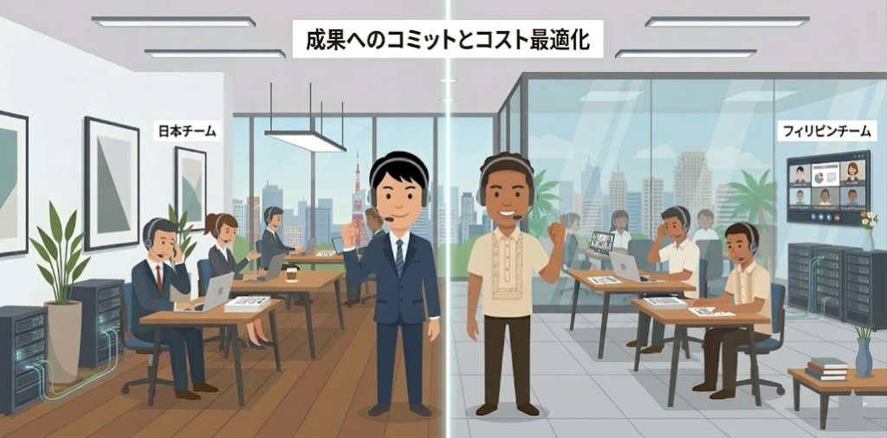

JG CORPORATION の
4つの特徴
設立以来培ってきた業務改革ノウハウと、先端技術への深い知見。少数精鋭ならではのコミットメントと、日本 ✕ セブの両拠点を活かしたコスト最適化。当社の競争力の源泉をご紹介します。
業務オペレーション改革と
基幹システム構築における
専門性
企業生産性向上のための
抜本的改革と様々な打ち手
受発注、申込審査、経理処理など、完全なシステム化が進まず、EXCEL 等を用いた管理とシステム入力が複雑に入り混じった煩雑な業務を抱えていませんか？
当社では、複雑化した業務を紐解きシンプルなオペレーションモデルを描く、業務に最適化されたシステムを構築する、AI-OCR や AI エージェントといった便利な技術を組み合わせ個別処理を効率化する、といったアプローチにより業務の自動化や高度化を実現します。
当社在籍メンバーの多くは製造業や不動産業で経験を積んできたメンバーで構成されており、設立以来この業務オペレーション改革にフォーカスしたサービス提供を行ってきました。蓄積してきたノウハウによる専門性の高いサービスを提供しております。

製造業における
専門性
経験を積んできた業界に
フォーカスしたサービスの提供
当社メンバーの多くは大手製造業のグローバルプロジェクトで経験を積んできており、設計・調達・生産・販売・アフターサービスといったバリューチェーン全体にわたるオペレーションと、それを支える基幹システムに精通しています。
サプライチェーン改革、ERP 導入、PLM、生産管理、IoT を活用したスマートファクトリーの実現まで、製造業ならではの複雑な業務要件を理解した上で、最適なソリューションをご提供します。

先端技術／AI への
精通
先端技術への投資と
AI 領域への早期からの取り組み
当社は最新技術の研究をはじめ、実に多くのプロジェクトに携わってきたメンバーで構成されています。基幹システム、決済システム、IoT プラットフォーム、検索エンジン等、大量トランザクションが発生し、堅牢・ハイパフォーマンス・高セキュアが求められるシステムを支える幅広い先端技術を提供することが可能です。
また、当社では AI 領域における研究に早期から着手してきました。フィジビリティの高い AI 技術についても提供することが可能です。

成果へのコミットと
コストの最適化
高品質・低価格を実現する
プロジェクト遂行サービス
当社のコンサルタントは、緻密な計画立案、論理的な問題解決、そしてゴールに向けてやりきる精神を持ち合わせた少数精鋭で構成されており、お客様と一体となりプロジェクトを力強く牽引します。
また、エンジニアリングにおいては、日本側の専門性の高いエンジニア集団とフィリピンオフショアメンバーが共同して開発を実施します。さらに、AI を用いた開発手法を確立しており、高い生産性でのシステム開発を提供します。
日々考え改善を繰り返してきた高品質で低価格なプロジェクト遂行サービスを提供いたします。
